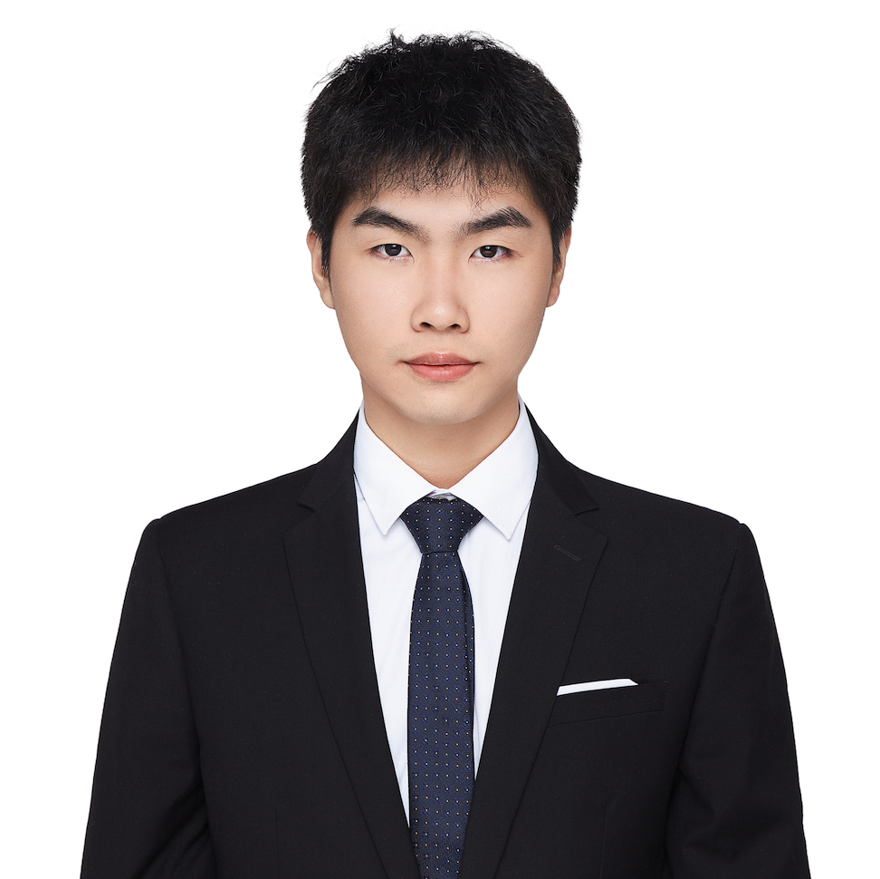

|
尹峰 Feng YinAssistant Professor yinfeng@cuhk.edu.cn
>>Professor Feng Yin received the B.Sc. degree from Shanghai Jiao Tong University, China, in 2008, and the M.Sc. and Ph.D. degrees from Technische Universität Darmstadt, Germany, in 2011 and 2014, respectively. From 2014 to 2016, he was with Ericsson Research, Linkoping, Sweden, working on the European Union FP7 Marie Curie Training Programme on Tracking in Complex Sensor Systems (TRAX). Since 2016, he has been with The Chinese University of Hong Kong, Shenzhen and also affiliated with the Shenzhen Research Institute of Big Data (SRIBD). He is currently serving as the Associate Editor for the Elsevier Signal Processing Journal and also as an IEEE senior member. |
Researcher

|
张浩鹏 Haopeng ZhangAssociate Professor 2014.07 ~ Now zhanghaopeng@buaa.edu.cnDr. Haopeng Zhang received the B.S. and Ph.D. degrees from Beihang University, Beijing, China, in 2008 and 2014, respectively, where he is currently an Assistant Professor with the Image Processing Center, School of Astronautics. His research interests include artificial intelligence technologies, e.g. image processing, pattern recognition, computer vision, machine learning, etc., and their applications in aerospace exploration, remote sensing, and medical image analysis. |

|
郑钰山 Yushan ZhengAssociate Professor 2022.01 ~ Now yszheng@buaa.edu.cnDr. Yushan Zheng received B.S, M.D and Ph.D degrees from Remex Lab, Image Processing Center, School of Astronautics, Beihang University in 2012, 2015 and 2019, repectively. His research interests include medical image processing, histopathological image retrieval, segmentation, normalization, digital pathology, deep learning, etc. |
PhD
|

|
黄心宇 Xinyu Huang2023.09 ~ Now xyhuang@cuhk.edu.cn
>> Xinyu Huang received the B.Eng degree in optoelectronic information science from the University of Electronic Science and Technology of China (UESTC) in 2023. Now he is a Ph.D. student of The Chinese University of Hong Kong, Shenzhen in electronic engineering, supervised by Prof. Feng Yin and Prof. Tsung-Hui Chang. |

|
谭智文 Zhewen Tan2020.09 ~ Now tassel@buaa.edu.cnTan Zhiwen enrolled in 2020 with a PhD degree and now he is currently studying Pattern Recognition and Intelligent System at Beihang University. |
MPhil

|
梅 寒 Han Mei2019.09 ~ Now meihan@buaa.edu.cnHan Mei studied at Beihang University in 2015 and obtained a bachelor's degree in aircraft design and engineering in 2019. He is currently pursuing a master's degree in pattern recognition and intelligent systems at the Image Center of Beihang University. |

|
罗 伟 Wei Luo2019.09 ~ Now luowei0701@buaa.edu.cnWei Luo received the B.Eng. from Beihang University in 2019. He is currently a postgraduate student with Prof. Zhiguo Jiang in the Image Processing Center, School of Astronautics at Beihang University. His research interets include medical image processing, deep learning, etc. |

|
马中天 Zhongtian Ma2019.09 ~ Now mazhongtian@buaa.edu.cnZhongtian Ma entered School of Astronautics, Beihang University in September 2015. He received a bachelor's degree in June 2019. He is currently a master student majored in Pattern Recognition and Intelligent System at Beihang University. His tutor is Professor Zhiguo Jiang. |

|
李功哲 Gongzhe Li2020.09 ~ Now gzLi2@buaa.edu.cnGongzhe Li received a bachelor's degree in June 2020.He is currently a master student majored in Pattern Recognition and Intelligent System at Beihang University. |

|
李晓涵 Xiaohan Li2020.09 ~ Now lixiaoh@buaa.edu.cnXiaohan Li received a bachelor's degree in June 2020. And she is currently a master student majored in Pattern Recognition and Intelligent System at Beihang University. |

|
李 俊 Jun Li2020.09 ~ Now junl1998@buaa.edu.cnJun Li received a bachelor's degree in June 2020. And he is currently a master student majored in Pattern Recognition and Intelligent System at Beihang University. |

|
乔 思 嘉 Sijia Qiao2021.09 ~ Now qiaosijia@buaa.edu.cnMy name is Qiao Sijia. I graduated from Beihang University in June 2021 with a bachelor's degree. I am currently a graduate student majoring in pattern recognition and intelligent systems at Beihang University. My current research direction is pose estimation. |

|
郭 晨 Chen Guo2021.09 ~ Now 17376521@buaa.edu.cnMy name is Guo Chen. I graduated from Beihang University in June 2021 with a bachelor's degree. I am currently a graduate student majoring in pattern recognition and intelligent systems at Beihang University. My current research direction is target detection. |

|
韩 哲 鑫 Zhexin Han2021.09 ~ Now hanzx@buaa.edu.cnMy name is Han Zhexin. I graduated from Beihang university in June 2021 with a bachelor's degree. At present, I am a graduate student majoring in pattern recognition and intelligent system of Beihang, and my research direction is super-resolution reconstruction. |

|
吴 坤 Kun Wu2021.09 ~ Now kunwu@buaa.edu.cnKun Wu received a bachelor's degree in June 2021. And he is currently a master student majored in Pattern Recognition and Intelligent System at Beihang University. His research interets include medical image processing, deep learning, etc. |